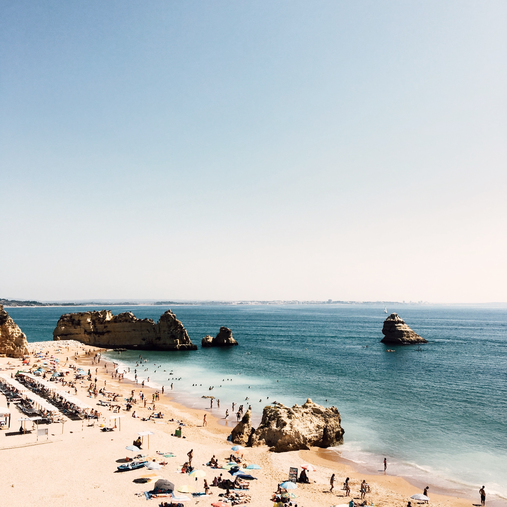

Faro liegt in Portugal.Es hat 438.864 Einwohner und eine Fläche von 202,57 km² .
Am 08.07.2019 sind wir für zwei Wochen nach Portugal geflogen. Wir sind in Lissabon angekommen und sind mit dem Taxi nach Faro gefahren. In Faro hat meine Familie auf uns gewartet. Wir haben zwei Wochen bei ihnen übernachtet. Sie hatten zwei Läden in Faro und ich konnte mir nehmen, was ich wollte. Wir sind fast jeden Tag Strand gewesen. Der Strand war sehr schön, aber es waren zu viele Menschen dort. Ich wollte nicht Schwimmen, weil ich gedachte, dass ein Hai kommt. Das Essen in Portugal hatte ich nicht so gern gegessen. Ich mag halt keine Meeresfrüchte. Sonst hat es mir sehr gefallen.
